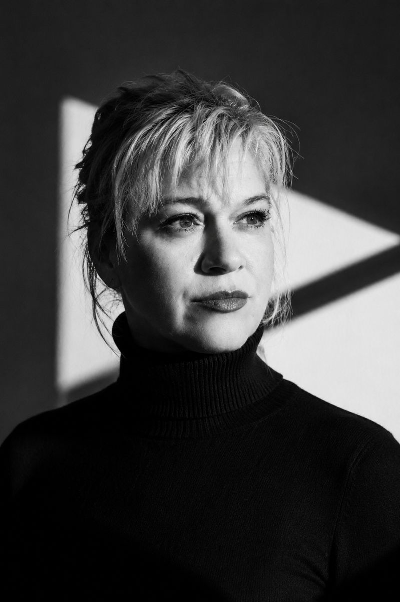
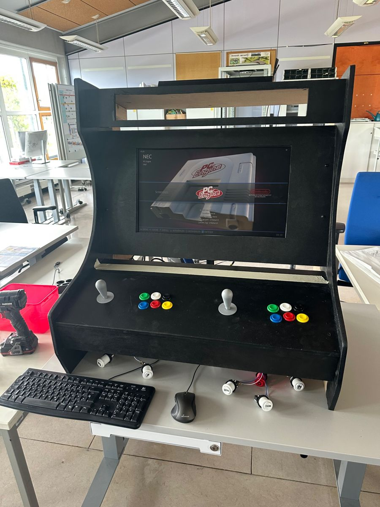
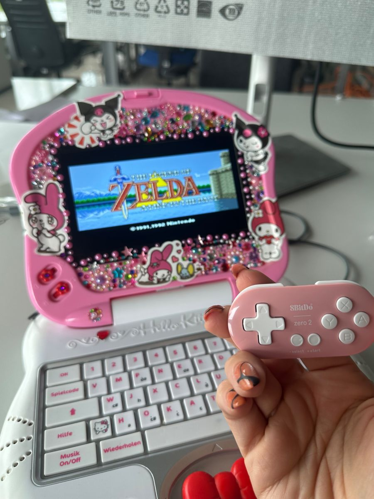
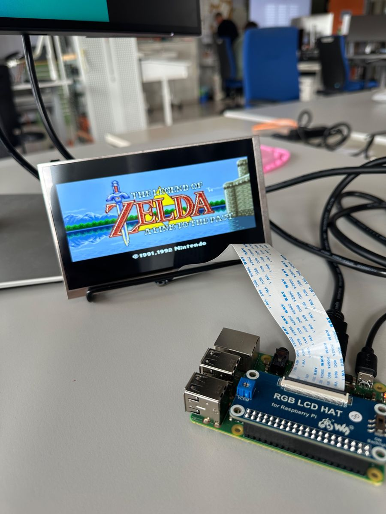
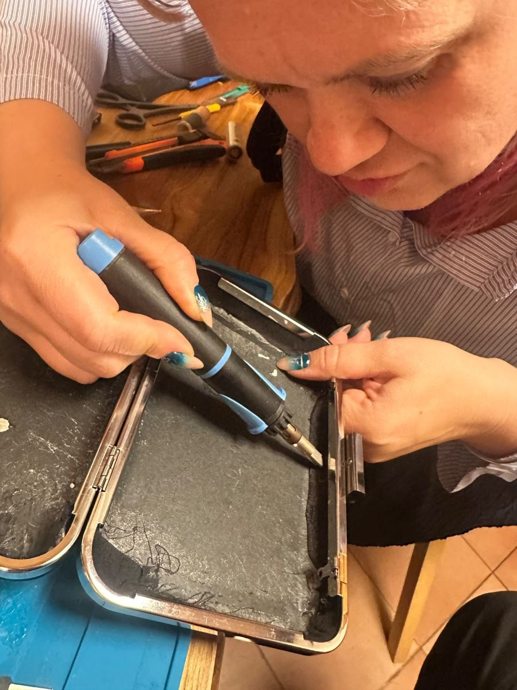

Eigenes NAS mit Foto-Cloud
Ein ausgedienter Büro-PC wurde zum Netzwerkspeicher. Er ersetzt die iCloud für die Familienfotos und ist von unterwegs sicher erreichbar, ohne offen im Internet zu stehen.
OpenMediaVault, Docker, Immich, Tailscale, SMB
Fachinformatikerin für Systemintegration in Ausbildung, Dresden. Früher medizinische Hochtechnologie, heute zuverlässige IT.
Mit 41 Jahren wage ich den Schritt in die IT, nachdem ich viele Jahre in der Medizin gearbeitet habe. Technologie hat mich schon mein ganzes Leben fasziniert und jetzt mache ich meine Begeisterung zum Beruf. Ich bin jemand, der sich von Problemen nicht abschrecken lässt, sondern so lange nach einer Lösung sucht bis sie einen Weg gefunden hat. Denn für mich gibt es keine unlösbaren Probleme, sondern manchmal Wege, die etwas mehr Kreativität erfordern. Und wenn der direkte Weg nicht klappt, finde ich halt einen Umweg. :-)

Arbeit mit Röntgen, CT und MRT, wo Technik zuverlässig laufen muss, weil Menschenleben davon abhängen.
Facharbeit über Technologien in der Altenpflege.
Prozesse gestalten, Normen umsetzen, sauber dokumentieren.
Netzwerktechnik, Linux, Virtualisierung, Programmierung mit Python und Java.
Für mein Praktikum möchte ich viel lernen, praktische Erfahrungen sammeln und neue Bereiche der IT entdecken. Besonders interessieren mich IT-Sicherheit, Abwehr von Angriffen und Cloud-Technologien. Ich möchte meine Kreativität und mein analytisches Denken einsetzen, Schwachstellen aufspüren und eigene Lösungen entwickeln. Ich suche Herausforderungen, an denen ich wachsen und aktiv mitgestalten kann.
Ein ausgedienter Büro-PC wurde zum Netzwerkspeicher. Er ersetzt die iCloud für die Familienfotos und ist von unterwegs sicher erreichbar, ohne offen im Internet zu stehen.
Gruppenprojekt: Mitarbeitende stempeln mit einer Karte ein und aus. Meine Aufgabe war die Vorbereitung des Raspberry Pi.
Ein Taschenrechner mit grafischer Oberfläche im Stil des Windows-Rechners.

Im Rahmen des Messe-Projekt des BFW entstanden und umgesetzt


Ein kindgerechter Laptop mit freier Software für meine Tochter.

[kleiner Text brauche ich da noch... eventuell foto]